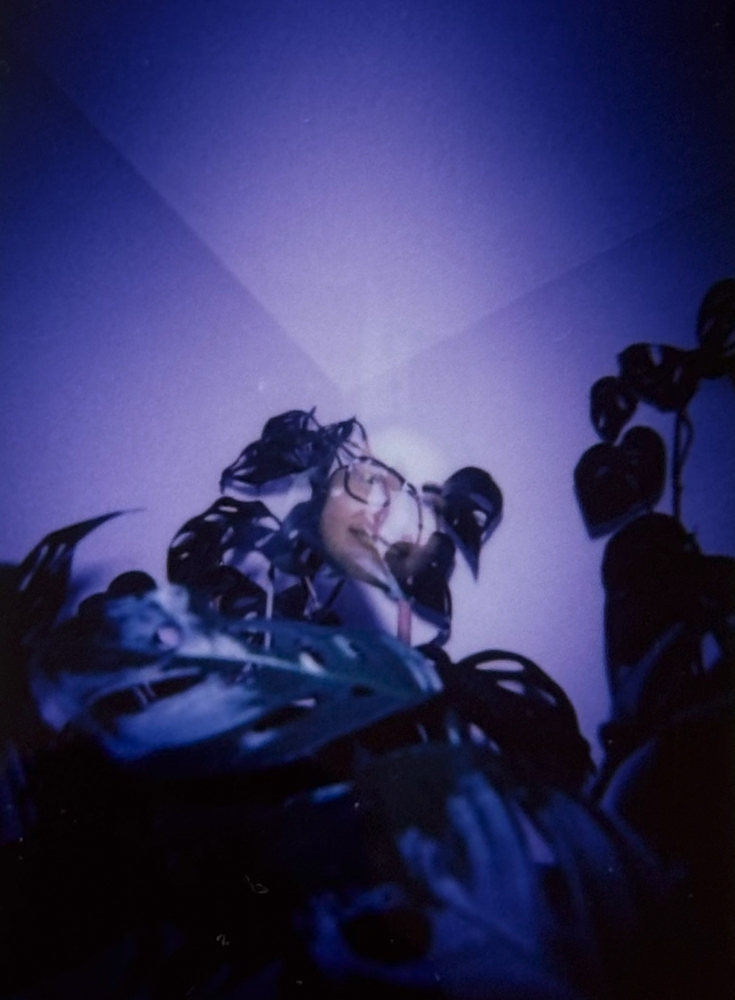
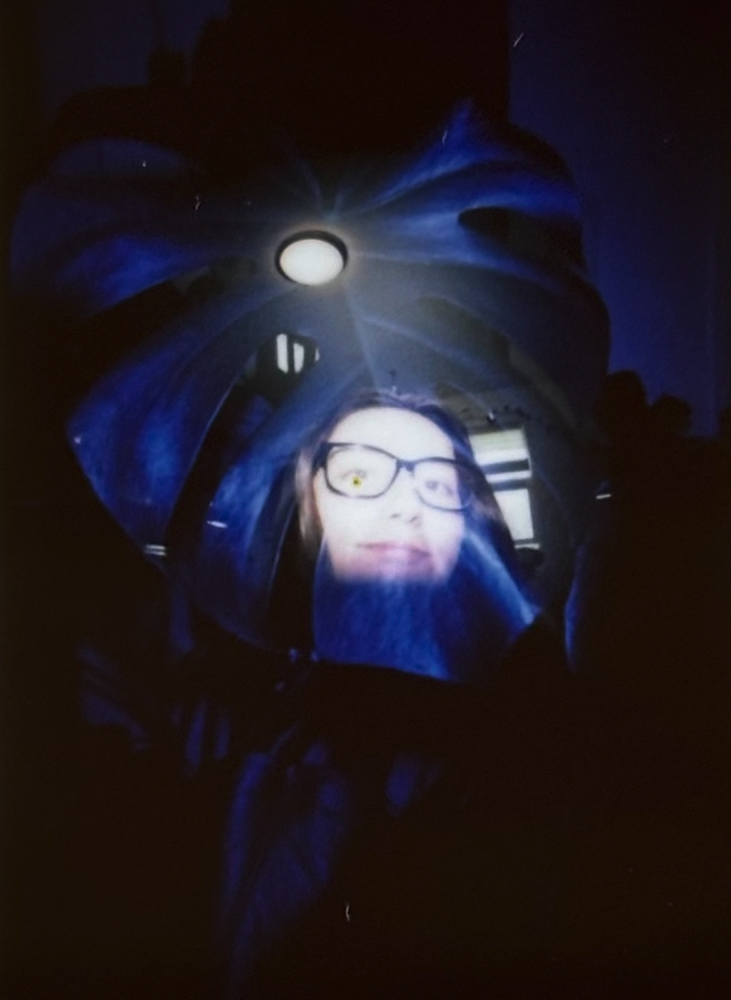
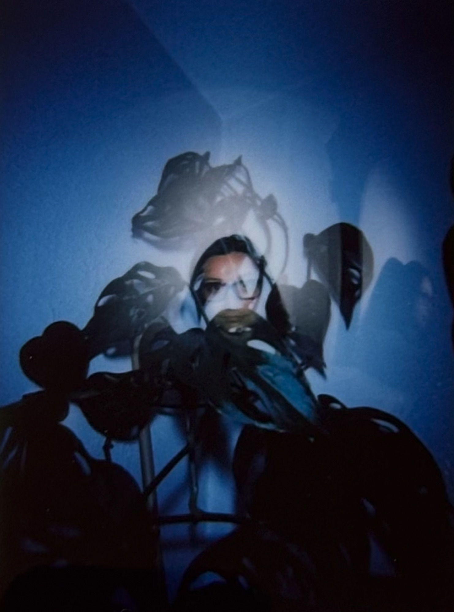
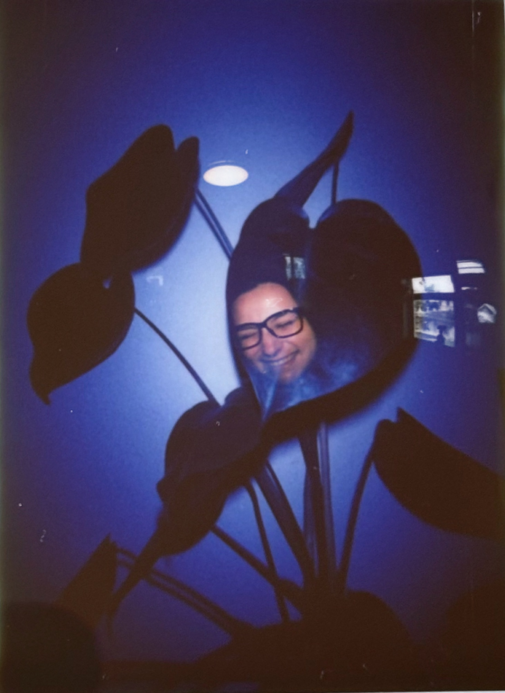

Language Data Scientist
& Digital Tinkererthey / them
I’m a Language Data Scientist working at the intersection of natural language processing (NLP), machine learning (ML), and large language models (LLMs).
I’m passionate about advancing human language technology through human-centered ML. I firmly believe we’ve entered an era where safe "AI" starts with a thorough understanding of how humans and machines use language systems, thoughtful data practices, and the mindset that the future is always scientifically worthwhile.
Before starting this journey, I was a professional photographer for over a decade. When I’m not toiling away at linguistics or ML, I’m likely taking film photos, hiking, writing, gaming, or spending time with my lovely family.
See more of my research for notable projects or visit my gallery to see my photography.
Skillset
Developing linguistic analysis pipelines and applying linguistic theory across production grade NLP systems.
Building internal benchmarks for frontier LLMs and VLMs across long-context and multi-turn dialogue with turn-level failure localization.
Improving annotation pipelines and UIs, guideline authoring, and demystifying inter-annotator agreement metrics.
Coding from-scratch JS tools and dashboards, Naive Bayes classifiers, phonaesthetics generators, and standalone reporting.
Transforming model failure modes and annotation disagreement into insight that drives data-backed decisions.
Generating tens of thousands of synthetic examples across dozens of use cases for experimental and research studies.
Timeline
A little over eight years working with linguistics across academia and industry, plus a creative life on the internet before that.
-
2025 — Present
Language Data ScientistInnodata
Focused on data quality, LLM evaluation, and workflow design for large-scale ML systems.
-
2022 — 2024
M.A. Linguistics + HLT CertificateUniversity of Colorado Boulder
Graduate work in computational linguistics and human language technology, with projects spanning LLM-generated text detection and corpora research on gendered vocatives.
-
2021 — 2025
ML Data LinguistAmazon Web Services
Four years working on data and quality frameworks for production ML, plus co-leading research on model steerability.
-
2018 — 2021
B.A. Linguistics + Philosophy MinorIowa State University
The formal start of my linguistics and philosophy studies. Topics covered computational linguistics, language and gender, and analytical philosophy.
-
2012 — 2023
Professional PhotographerCentral Iowa
Spent a decade as a (digital) photographer, where I specialized in portraiture, weddings, and cats.
-
2000s
Digital TinkererThe Internet
Picked up HTML/CSS by being chronically online, learned photo-editing programs like PaintShop Pro, and played a lot of Neopets.